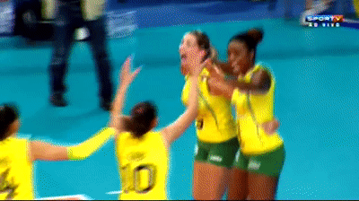

Seleção da Itália impressiona com jogo de vôlei em anfiteatro de gladiadores
Abertura do Europeu de Vôlei Feminino foi disputado a céu aberto, na Arena de Verona
O Brasil segue com uma campanha irrepreensível no Sul-Americano Feminino, última competição antes do Pré-Olímpico em setembro, no Japão. Depois de estrear vencendo o Chile, a equipe do técnico José Roberto Guimarães fez 3 sets a 0 (parciais de 25/17, 25/16 e 25/17) neste domingo, no ginásio Geraldão, em Recife-PE. O próximo compromisso das brasileiras no torneio é contra o Peru, na terça-feira, às 20h30. O sportv2 transmite ao vivo. Brasil
Domínio no 2º set
Diferentemente do primeiro set, o Brasil iniciou a segunda parcial melhor em quadra, fazendo 5 a 2. Pouco depois, Gabi soltou o braço, ampliando para 9 a 5. Estava fácil. Após levantamento perfeito de Roberta, Thaísa colocou a bola no chão, marcando 17 a 10. Numa largadinha de Kisy, o placar foi a 22 a 14. A partir de então, coube ao Brasil controlar a partida até fechar o set em 25 a 16.